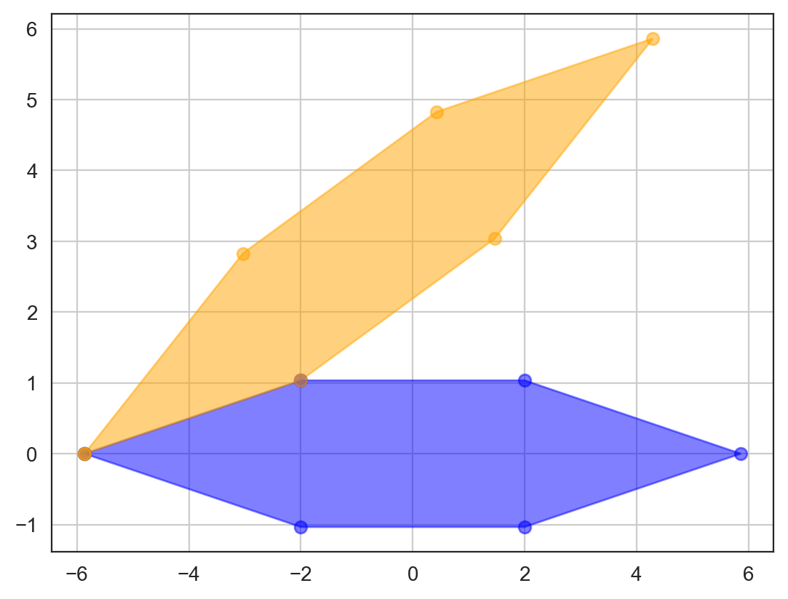
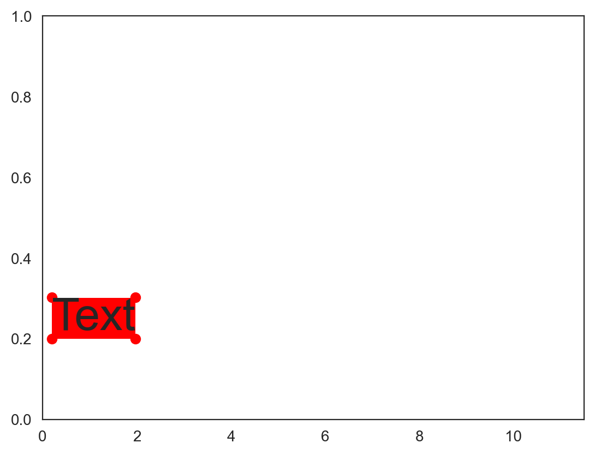

from collections import defaultdict
import numpy as np
import matplotlib.pyplot as plt
import seaborn as sns
sns.set_style('white')
%matplotlib inline
%config InlineBackend.figure_format = 'retina'
import geneinfo as gi
gi.email('your@email.com')Chromosome ideograms
annotation = [
('chr1', 50000000, 50001000), # segment color defaults to red
('chr2', 10000000, 1000000, 'green'), # with segment color
('chr3', 45000000, 55000000, 'blue', 'NAME'), # with name label
('chr6', 10000000, 15000000, 'magenta', None, 0, 0.5), # with base and height
('chr6', 10000000, 15000000, 'pink', None, 0.5, 0.5), # with base and height
]
gi.chrom_ideogram(annotation, figsize=(8, 8))Bbox(x0=50000000.0, y0=2.299999999999997, x1=55969788.76009743, y1=4.042857509538209)
To make sure segments are visible on the plot, the default minimal size of plotteed segments are 200000. This can be changed like this (notice how the chr1 segment is no longer visible):
gi.chrom_ideogram(annotation, figsize=(8, 8), min_visible_width=1, hspace=0)Bbox(x0=50000000.0, y0=2.299999999999997, x1=55969788.76009743, y1=3.8909902576697277)
Other assembly, figure dimentions:
gi.chrom_ideogram(annotation, assembly='hg19', figsize=(8, 8))Bbox(x0=49999999.99999999, y0=2.299999999999997, x1=55976834.941172086, y1=4.042857509538209)
You can add position markers along a chromosome like this to better see the location of some segments:
chrom = 'chr3'
start = 100000000
end = 200000000
width = 10000000
annotation2 = annotation + [(chrom, x[0], x[1], 'black', str(x[2]/width)) for x in zip(
range(start, end, width),
range(start+1, end, width),
range(start, end, width)
)]
gi.chrom_ideogram(annotation2, figsize=(8, 8))Bbox(x0=50000000.0, y0=2.299999999999997, x1=55969788.76009743, y1=4.042857509538209)
Bbox(x0=100000000.5, y0=2.299999999999997, x1=104512876.5269784, y1=3.6175172839961505)
Bbox(x0=110000000.5, y0=2.299999999999997, x1=114406273.15626237, y1=3.586394828468684)
Bbox(x0=120000000.5, y0=2.299999999999997, x1=124512876.5269784, y1=3.6175172839961505)
Bbox(x0=130000000.5, y0=2.299999999999997, x1=134512876.5269784, y1=3.6175172839961505)
Bbox(x0=140000000.5, y0=2.299999999999997, x1=144512876.5269784, y1=3.6175172839961505)
Bbox(x0=150000000.5, y0=2.299999999999997, x1=154512876.52697843, y1=3.6175172839961505)
Bbox(x0=160000000.5, y0=2.299999999999997, x1=164512876.52697843, y1=3.6175172839961505)
Bbox(x0=170000000.5, y0=2.299999999999997, x1=174512876.5269784, y1=3.6175172839961505)
Bbox(x0=180000000.5, y0=2.299999999999997, x1=184512876.5269784, y1=3.6175172839961505)
Bbox(x0=190000000.5, y0=2.299999999999997, x1=194512876.5269784, y1=3.6175172839961505)
lists = gi.GoogleSheet()import importlib
import geneinfo
importlib.reload(geneinfo)
coords = gi.gene_coord(lists.get('xi_escape'), assembly='GRCh38')
annotation = [(c, s, e, 'red', g) for g, (c, s, e, _) in coords.items()]coords = gi.gene_coord(['ATRX', 'MAGT1'], assembly='GRCh38')
annotation = [(c, s, e, 'red', g) for g, (c, s, e, _) in coords.items()]class Point:
def __init__(self, x, y):
self.x = x
self.y = y
class Polygon:
def __init__(self, points):
self.points = points
def get_points(self):
return self.points
def nudge_y(self, nudge):
for point in self.points:
point.y += nudge
def is_polygons_intersecting(a, b):
for x in range(2):
polygon = a if x == 0 else b
for i1 in range(len(polygon.get_points())):
i2 = (i1 + 1) % len(polygon.get_points())
p1 = polygon.get_points()[i1]
p2 = polygon.get_points()[i2]
normal = Point(p2.y - p1.y, p1.x - p2.x)
min_a = float('inf')
max_a = float('-inf')
for p in a.get_points():
projected = normal.x * p.x + normal.y * p.y
min_a = min(min_a, projected)
max_a = max(max_a, projected)
min_b = float('inf')
max_b = float('-inf')
for p in b.get_points():
projected = normal.x * p.x + normal.y * p.y
min_b = min(min_b, projected)
max_b = max(max_b, projected)
if max_a < min_b or max_b < min_a:
return False
return True
a = list(zip([0, 0, 2, 2], [0, 2, 2, 0]))
b = list(zip([1, 1, 3, 3], [1, 3, 3, 1]))
is_polygons_intersecting(
Polygon([Point(*tup) for tup in a]),
Polygon([Point(*tup) for tup in b])
)Trueimport pandas as pd
import math
from matplotlib.artist import Artist
from operator import sub
axes_height_inches = 0.8
aspect = 0.1
axes_width_inches = axes_height_inches / aspect
max_chrom_size = 1e5
axes_height = aspect * max_chrom_size
fig_height = axes_height_inches * nr_rows
fig_width = fig_height / nr_rows / aspect
# axes_height = 1e4 # relative to length of chrom one
# max_chrom_size = 1e5
# aspect = axes_height / max_chrom_size
# fig_width = 8
# axes_height_inches = fig_width_inches * aspect
# fig_height = axes_height_inches * nr_rows
print(axes_height, aspect, axes_height_inches, fig_width, fig_height)
point_size = 1/72
nr_rows = 11
fig, axes = plt.subplots(nr_rows, 1, figsize=(fig_width, fig_width*aspect*nr_rows), sharex=True, sharey=True)
plt.subplots_adjust(hspace=0)
ax = axes[0]
xlim = (0, max_chrom_size)
ylim = (0, 1)
scaled_y_lim = xlim[0] * aspect, xlim[1] * aspect
ax.set_xlim(xlim)
ax.set_ylim(scaled_y_lim)
plt.yticks([])
y_unit = -sub(*scaled_y_lim) / -sub(*ylim)
rel_font_height = 0.07
font_size = rel_font_height * axes_height_inches / point_size
def draw_text(x_pos, y_pos, text, font_size, ax, y_line_bottom=0):
# y_unit = -sub(*scaled_y_lim(ax) / -sub(*self.ylim)
t = ax.text(x_pos, y_pos, text, fontsize=font_size,
horizontalalignment='left',
verticalalignment='bottom',
rotation=45, zorder=3,
bbox=dict(boxstyle='square,pad=0', fc='none', ec='none'))
ax.plot((x_pos, x_pos, x_pos+y_unit/40),
(y_line_bottom, y_pos, y_pos+y_unit/40),
linewidth=0.5, color='darkgray', zorder=2)
def get_polygon(text:str, x_pos:int, y_pos:float, ax:matplotlib.axes.Axes) -> Polygon:
# y_unit = -sub(*scaled_y_lim(ax) / -sub(*self.ylim)
y_pos = y_pos * y_unit
t = ax.text(x_pos, y_pos, text, fontsize=font_size,
horizontalalignment='left',
verticalalignment='bottom',
rotation=0, zorder=3,
# bbox=dict(boxstyle='square,pad=0',
bbox=dict(boxstyle='square',
fc='none', ec='none', alpha=0.4))
transf = ax.transData.inverted()
bb = t.get_window_extent(renderer = fig.canvas.get_renderer())
bbt = bb.transformed(transf)
coords = bbt.get_points()
Artist.remove(t)
(x0, y0), (x1, y1) = coords
pad = (y1 - y0)/5
coords = np.array([(x0, y0), (x0, y1), (x1, y1), (x1, y0)])
x, y = zip(*coords)
df = pd.DataFrame(dict(x=x, y=y))
df['y'] -= y_pos
df['x'] -= x_pos
dfx = df['x']*math.cos(math.radians(45))-df['y']*math.sin(math.radians(45))
df['y'] = df['x']*math.sin(math.radians(45))+df['y']*math.cos(math.radians(45))
df['x'] = dfx
df['y'] += y_pos
df['x'] += x_pos
coords = np.array(list(zip(df.x, df.y)))
x_pos, y_pos = df['x'][0] - (df['x'][0] - df['x'][1]), df['y'][0]
df['x'] = df.x + np.array([-pad, -pad, pad, pad])
df['y'] = df.y + np.array([-pad, pad, pad, -pad])
return x_pos, y_pos, Polygon([Point(x, y) for x, y in zip(df.x, df.y)])
# annot = [(x, 'AKAP4') for x in range(1, int(max_chrom_size), int(max_chrom_size/100))]
import random
_names = random.choices(['AKAP4', 'DYNLT3', 'MAGEA4', 'TP53'], k=100)
_pos = np.random.randint(1, max_chrom_size, 100).tolist()
annot = list(zip(_pos, _names))
#annot = [(x, 'AKAP4') for x in np.random.randint(1, max_chrom_size, 100).tolist()]
annot = sorted(annot, reverse=True)
for ax in axes:
# y_unit = -sub(*scaled_y_lim(ax) / -sub(*self.ylim)
polybuff = []
for pos, name in annot:
x, y, poly = get_polygon(name, pos, 0.1, ax)
while any(is_polygons_intersecting(poly, p) for p in polybuff):
nudge = 0.1 * y_unit
y += nudge
poly.nudge_y(nudge)
draw_text(x, y, name, font_size, ax)
if len(polybuff) > 5:
del polybuff[0]
polybuff.append(poly)
z = 10
for i, t in enumerate(reversed(ax.texts)):
t.set_zorder(z+i)--------------------------------------------------------------------------- NameError Traceback (most recent call last) Cell In[10], line 12 10 max_chrom_size = 1e5 11 axes_height = aspect * max_chrom_size ---> 12 fig_height = axes_height_inches * nr_rows 13 fig_width = fig_height / nr_rows / aspect 15 # axes_height = 1e4 # relative to length of chrom one 16 # max_chrom_size = 1e5 17 # aspect = axes_height / max_chrom_size 18 # fig_width = 8 19 # axes_height_inches = fig_width_inches * aspect 20 # fig_height = axes_height_inches * nr_rows NameError: name 'nr_rows' is not defined
import pandas as pd
import math
import matplotlib
import matplotlib.pyplot as plt
from matplotlib import patches
from matplotlib.artist import Artist
from operator import sub
import random
import numpy as np
from collections import defaultdict
from itertools import cycle
%matplotlib inline
%config InlineBackend.figure_format = 'retina'
class Point:
def __init__(self, x, y):
self.x = x
self.y = y
class Polygon:
def __init__(self, points):
self.points = points
def get_points(self):
return self.points
def nudge_y(self, nudge):
for point in self.points:
point.y += nudge
class GenomeIdeogram(object):
d = {'axes.linewidth': 0.8, 'grid.linewidth': 0.64, 'lines.linewidth': 0.96,
'lines.markersize': 3.84, 'patch.linewidth': 0.64, 'xtick.major.width': 0.8,
'ytick.major.width': 0.8, 'xtick.minor.width': 0.64, 'ytick.minor.width': 0.64,
'xtick.major.size': 3.84, 'ytick.major.size': 3.84, 'xtick.minor.size': 2.56,
'ytick.minor.size': 2.56, 'font.size': 7.68, 'axes.labelsize': 7.68,
'axes.titlesize': 7.68, 'xtick.labelsize': 7.04, 'ytick.labelsize': 7.04,
'legend.fontsize': 7.04, 'legend.title_fontsize': 7.68}
chrom_lengths = {'hg19': {'chr1': 249250621, 'chr2': 243199373, 'chr3': 198022430, 'chr4': 191154276,
'chr5': 180915260, 'chr6': 171115067, 'chr7': 159138663, 'chr8': 146364022,
'chr9': 141213431, 'chr10': 135534747, 'chr11': 135006516, 'chr12': 133851895,
'chr13': 115169878, 'chr14': 107349540, 'chr15': 102531392, 'chr16': 90354753,
'chr17': 81195210, 'chr18': 78077248, 'chr19': 59128983, 'chr20': 63025520,
'chr21': 48129895, 'chr22': 51304566, 'chrX': 155270560, 'chrY': 59373566},
'hg38': {'chr1': 248956422, 'chr2': 242193529, 'chr3': 198295559, 'chr4': 190214555,
'chr5': 181538259, 'chr6': 170805979, 'chr7': 159345973, 'chr8': 145138636,
'chr9': 138394717, 'chr10': 133797422, 'chr11': 135086622, 'chr12': 133275309,
'chr13': 114364328, 'chr14': 107043718, 'chr15': 101991189, 'chr16': 90338345,
'chr17': 83257441, 'chr18': 80373285, 'chr19': 58617616, 'chr20': 64444167,
'chr21': 46709983, 'chr22': 50818468, 'chrX': 156040895, 'chrY': 57227415}}
# TODO: make the centromeres fit each assembly!
centromeres = {
'chr1': (121700000, 125100000),
'chr10': (38000000, 41600000),
'chr11': (51000000, 55800000),
'chr12': (33200000, 37800000),
'chr13': (16500000, 18900000),
'chr14': (16100000, 18200000),
'chr15': (17500000, 20500000),
'chr16': (35300000, 38400000),
'chr17': (22700000, 27400000),
'chr18': (15400000, 21500000),
'chr19': (24200000, 28100000),
'chr2': (91800000, 96000000),
'chr20': (25700000, 30400000),
'chr21': (10900000, 13000000),
'chr22': (13700000, 17400000),
'chr3': (87800000, 94000000),
'chr4': (48200000, 51800000),
'chr5': (46100000, 51400000),
'chr6': (58500000, 62600000),
'chr7': (58100000, 62100000),
'chr8': (43200000, 47200000),
'chr9': (42200000, 45500000),
'chrX': (58100000, 63800000),
'chrY': (10300000, 10400000)}
def __init__(self, axes_height_inches=1, axes_width_inches=12, hspace=0, ylim=(0, 1),
rel_font_height=0.05, assembly:str='hg38'):
self.ideogram_base = None
self.ideogram_height = None
self.chr_names = [f'chr{x}' for x in list(range(1, 23))+['X', 'Y']]
self.chr_sizes = [self.chrom_lengths[assembly][chrom] for chrom in self.chr_names]
self.max_chrom_size = max(self.chr_sizes)
nr_rows = len(self.chr_names) - 1
self.aspect = axes_height_inches / axes_width_inches
axes_width = self.max_chrom_size
axes_height = self.aspect * self.max_chrom_size
fig_height_inches = axes_height_inches * (nr_rows-1) + hspace * (nr_rows-1)
fig_width_inches = axes_width_inches #fig_height_inches / (nr_rows-1) / aspect
figsize = (fig_width_inches, fig_height_inches)
point_size = 1/72
self.ylim = ylim
self.font_size = rel_font_height * axes_height_inches / point_size
self.fig = plt.figure(figsize=figsize)
plt.subplots_adjust(hspace=0)
with plt.rc_context(self.d):
nr_rows, nr_cols = len(self.chr_names)-2+1, 2
# fig = plt.figure(figsize=figsize)
end_padding = 300000
# gs = matplotlib.gridspec.GridSpec(nr_rows, 25)
gs = matplotlib.gridspec.GridSpec(nr_rows+1, 25, height_ratios=[1e-2]+[1]*nr_rows)
gs.update(wspace=0, hspace=hspace)
dummy_ax = plt.subplot(gs[0, :])
xlim = (-end_padding, self.max_chrom_size+end_padding)
dummy_ax.set_xlim(xlim)
# dummy_ax.spines[['right', 'top', 'left', 'bottom']].set_visible(False)
dummy_ax.spines['top'].set_visible(True)
dummy_ax.xaxis.tick_top()
dummy_ax.xaxis.set_label_position('top')
dummy_ax.yaxis.set_ticks_position('none')
dummy_ax.set_yticklabels([])
ax_list = [plt.subplot(gs[i, :]) for i in range(1, nr_rows-2)]
ax_list.append(plt.subplot(gs[nr_rows-2, :9]))
ax_list.append(plt.subplot(gs[nr_rows-1, :9]))
ax_list.append(plt.subplot(gs[nr_rows-2, 9:]))
ax_list.append(plt.subplot(gs[nr_rows-1, 9:]))
self.ax_list = ax_list
self.chr_axes = dict(zip(self.chr_names, self.ax_list))
for ax in self.ax_list[:-4]:
xlim = (-end_padding, self.max_chrom_size+end_padding)
scaled_y_lim = xlim[0] * self.aspect, xlim[1] * self.aspect
ax.set_xlim(xlim)
ax.set_ylim(scaled_y_lim)
for ax in ax_list[-4:]:
xlim = (-end_padding, ((25-9)/25)*self.max_chrom_size+end_padding)
scaled_y_lim = xlim[0] * self.aspect, xlim[1] * self.aspect
ax.set_xlim(xlim)
ax.set_ylim(scaled_y_lim)
for i in range(len(self.ax_list)):
chrom = self.chr_names[i]
ax = ax_list[i]
start, end = 0, self.chr_sizes[i]
ax.spines[['right', 'top', 'left', 'bottom']].set_visible(False)
# ax.spines['top'].set_visible(False)
# ax.spines['right'].set_visible(False)
# ax.spines['bottom'].set_visible(False)
# ax.spines['left'].set_visible(False)
# ax.set_ylim((0, 3))
# ax.set_ylim((0, 5))
if i in [20, 21]:
x = -3500000 * 10 / figsize[1]
else:
x = -2000000 * 10 / figsize[1]
ax.text(x, self.map_y(-sub(*self.ylim), ax)/2, chrom.replace('chr', ''), fontsize=7, verticalalignment='center', horizontalalignment='right', weight='bold')
# h = ax.set_ylabel(chrom)
# h.set_rotation(0)
ax.set_yticklabels([])
# if i == 0:
# ax.spines['top'].set_visible(True)
# ax.xaxis.tick_top()
# ax.xaxis.set_label_position('top')
# ax.yaxis.set_ticks_position('none')
# elif i == len(ax_list)-1:
if i == len(self.ax_list)-1:
ax.xaxis.tick_bottom()
ax.spines['bottom'].set_visible(True)
ax.yaxis.set_ticks_position('none')
ax.yaxis.set_visible(False)
ax.set_yticklabels([])
else:
ax.set_xticklabels([])
ax.xaxis.set_ticks_position('none')
ax.yaxis.set_ticks_position('none')
# ax.spines[['right', 'top', 'left', 'bottom']].set_visible(False)
def draw_chromosomes(self, base=0.05, height=0.25, facecolor='#EBEAEA', edgecolor='black', linewidth=0.7, **kwargs):
self.ideogram_base = base
self.ideogram_height = height
with plt.rc_context(self.d):
for i in range(len(self.ax_list)):
chrom = self.chr_names[i]
ax = self.ax_list[i]
start, end = 0, self.chr_sizes[i]
ideogram_base = self.map_y(base, ax)
ideogram_height = self.map_y(height, ax)
# draw chrom
g = ax.add_patch(patches.Rectangle((start, ideogram_base), end-start, ideogram_height,
# fill=False,
facecolor=facecolor,
edgecolor=edgecolor,
zorder=0,
linewidth=linewidth,
**kwargs
))
# g = ax.add_patch(patches.Rectangle((start, ideogram_base), end-start, ideogram_height,
# # fill=False,
# facecolor='black',
# edgecolor=None,
# # zorder=1,
# ))
# g = ax.add_patch(patches.Rectangle((start+self.map_y(0.01, ax), ideogram_base+self.map_y(0.01, ax)), (end-start)-self.map_y(2*0.01, ax), ideogram_height-self.map_y(2*.01, ax),
# # fill=False,
# facecolor='#EBEAEA',
# edgecolor=None,
# # zorder=1,
# ))
# draw centromere
cent_start, cent_end = self.centromeres[chrom]
ymin, ymax = ax.get_ylim()
ax.add_patch(patches.Rectangle((cent_start, ymin), cent_end-cent_start, ymax,
fill=True, color='white',
zorder=1))
xy = [[cent_start, ideogram_base], [cent_start, ideogram_base+ideogram_height], [cent_end, ideogram_base], [cent_end, ideogram_base+ideogram_height]]
g = ax.add_patch(patches.Polygon(xy, closed=True, zorder=2, fill=True,
# color='#666666',
color='#777777',
))
def is_polygons_intersecting(self, a, b):
for x in range(2):
polygon = a if x == 0 else b
for i1 in range(len(polygon.get_points())):
i2 = (i1 + 1) % len(polygon.get_points())
p1 = polygon.get_points()[i1]
p2 = polygon.get_points()[i2]
normal = Point(p2.y - p1.y, p1.x - p2.x)
min_a = float('inf')
max_a = float('-inf')
for p in a.get_points():
projected = normal.x * p.x + normal.y * p.y
min_a = min(min_a, projected)
max_a = max(max_a, projected)
min_b = float('inf')
max_b = float('-inf')
for p in b.get_points():
projected = normal.x * p.x + normal.y * p.y
min_b = min(min_b, projected)
max_b = max(max_b, projected)
if max_a < min_b or max_b < min_a:
return False
return True
def scaled_y_lim(self, ax):
# xlim = (0, max_chrom_size)
xlim = ax.get_xlim()
return xlim[0] * self.aspect, xlim[1] * self.aspect
def map_y(self, y, ax, bottom=0, top=1):
miny, maxy = ax.get_ylim()
return y * (top - bottom) * (maxy - miny) / (self.ylim[1] - self.ylim[0]) + bottom * (maxy - miny)
# zero = -miny
# if y >= 0:
# return y * (top - max(bottom, zero)) * (maxy - zero) / (self.ylim[1] - self.ylim[0]) + max(bottom, zero) * (maxy - zero)
# else:
# return y * (min(top, zero) - bottom) * (zero - miny) / (self.ylim[1] - self.ylim[0]) + min(top, zero) * (zero - miny)
def draw_text(self, x_pos, y_pos, text, ax, color='black', y_line_bottom=0):
y_unit = -sub(*self.scaled_y_lim(ax)) / -sub(*self.ylim)
t = ax.text(x_pos, y_pos, text, fontsize=self.font_size,
color=color,
horizontalalignment='left',
verticalalignment='bottom',
rotation=45, zorder=3,
bbox=dict(boxstyle='square,pad=0',
fc='none',
# fc=color, alpha=0.4,
ec='none'))
ax.plot((x_pos, x_pos, x_pos+y_unit/40),
(y_line_bottom, y_pos, y_pos+y_unit/40),
linewidth=0.5,
# color='darkgray',
color=color,
alpha=0.3,
zorder=2)
def get_polygon(self, text:str, x_pos:int, y_pos:float, ax:matplotlib.axes.Axes) -> Polygon:
y_unit = -sub(*self.scaled_y_lim(ax)) / -sub(*self.ylim)
y_pos = y_pos * y_unit
t = ax.text(x_pos, y_pos, text, fontsize=self.font_size,
horizontalalignment='left',
verticalalignment='bottom',
rotation=0, zorder=3,
# bbox=dict(boxstyle='square,pad=0',
bbox=dict(boxstyle='square',
fc='none', ec='none', alpha=0.4))
transf = ax.transData.inverted()
bb = t.get_window_extent(renderer = self.fig.canvas.get_renderer())
bbt = bb.transformed(transf)
coords = bbt.get_points()
Artist.remove(t)
(x0, y0), (x1, y1) = coords
pad = (y1 - y0)/5
coords = np.array([(x0, y0), (x0, y1), (x1, y1), (x1, y0)])
x, y = zip(*coords)
df = pd.DataFrame(dict(x=x, y=y))
df['y'] -= y_pos
df['x'] -= x_pos
dfx = df['x']*math.cos(math.radians(45))-df['y']*math.sin(math.radians(45))
df['y'] = df['x']*math.sin(math.radians(45))+df['y']*math.cos(math.radians(45))
df['x'] = dfx
df['y'] += y_pos
df['x'] += x_pos
coords = np.array(list(zip(df.x, df.y)))
x_pos, y_pos = df['x'][0] - (df['x'][0] - df['x'][1]), df['y'][0]
df['x'] = df.x + np.array([-pad, -pad, pad, pad])
df['y'] = df.y + np.array([-pad, pad, pad, -pad])
return x_pos, y_pos, Polygon([Point(x, y) for x, y in zip(df.x, df.y)])
# def add_labels(self, data, labels='name', chrom='chrom', x='pos'):
def add_labels(self, annot, y0=0, y1=0.2):
chrom_annot = defaultdict(list)
for a in annot:
chrom_annot[a[0]].append(a[1:])
for chrom, annot in chrom_annot.items():
ax = self.chr_axes[chrom]
annot = sorted(annot, reverse=True)
y_unit = -sub(*self.scaled_y_lim(ax)) / -sub(*self.ylim)
polybuff = []
for pos, name, *args in annot:
x, y, poly = self.get_polygon(name, pos, y1, ax)
while any(self.is_polygons_intersecting(poly, p) for p in polybuff):
nudge = 0.01 * y_unit
y += nudge
poly.nudge_y(nudge)
self.draw_text(x, y, name, ax, *args, y_line_bottom=y0*y_unit)
polybuff.append(poly)
if len(polybuff) > 10:
del polybuff[0]
z = 10
for i, t in enumerate(reversed(ax.texts)):
t.set_zorder(z+i)
def add_segments(self, annot, base=None, height=None,
min_visible_width:int=200000, color='black'):
if base is None:
base = self.ideogram_base
if height is None:
height = self.ideogram_height
chrom_annot = defaultdict(list)
for a in annot:
chrom_annot[a[0]].append(a[1:])
for chrom, annot in chrom_annot.items():
ax = self.chr_axes[chrom]
annot = sorted(annot, reverse=True)
y_unit = -sub(*self.scaled_y_lim(ax)) / -sub(*self.ylim)
for start, end in annot:
scaled_base = base * y_unit
scaled_height = height * y_unit
width = end - start
if width < min_visible_width:
start -= min_visible_width/2
width += min_visible_width
rect = patches.Rectangle((start, scaled_base), width, scaled_height, linewidth=1, edgecolor='none', facecolor=color, zorder=3)
self.chr_axes[chrom].add_patch(rect)
def map(self, fun, data=None, chrom_col='chrom', yaxis=(0, 1), **kwargs):
bottom, top = yaxis
renames = {}
for key, val in list(kwargs.items()):
if key in data.columns:
renames[key] = val
del kwargs[key]
df = data.rename(columns=renames)
grouped = data.groupby(chrom_col)
for chrom, group in grouped:
ax = self.chr_axes[chrom]
scaled_y_lim = ax.get_ylim()
if 'ylim' in kwargs:
dy = -sub(*ylim)
else:
dy = -sub(*self.ylim)
df = group.iloc[:]
df['y'] = df.y * ((top-bottom) * -sub(*scaled_y_lim)) / dy + bottom * -sub(*scaled_y_lim)
df.apply(fun, axis=1, **kwargs)
plt.xlabel('')
plt.ylabel('')
def map_dataframe(self, fun, data=None, chrom_col='chrom', yaxis=(0, 1), **kwargs):
bottom, top = yaxis
grouped = data.groupby(chrom_col)
for chrom, group in grouped:
ax = self.chr_axes[chrom]
scaled_y_lim = ax.get_ylim()
if 'ylim' in kwargs:
dy = -sub(*ylim)
else:
dy = -sub(*self.ylim)
df = group.copy()
df['y'] -= df.y.min()
df['y'] /= df.y.max()
df['y'] = df.y * ((top-bottom) * -sub(*scaled_y_lim)) / -sub(*self.ylim) + bottom / -sub(*self.ylim) * -sub(*scaled_y_lim)
g = fun(df, ax=ax, **kwargs)
plt.xlabel('')
plt.ylabel('')
class ChromIdeogram(GenomeIdeogram):
def __init__(self, chrom, axes_height_inches=1, axes_width_inches=12, hspace=0, ylim=(0, 1),
rel_font_height=0.05, assembly:str='hg38'):
self.ideogram_base = None
self.ideogram_height = None
self.chr_names = [chrom]
self.chr_sizes = [self.chrom_lengths[assembly][chrom] for chrom in self.chr_names]
self.max_chrom_size = max(self.chr_sizes)
nr_rows = 1
self.aspect = axes_height_inches / axes_width_inches
axes_width = self.max_chrom_size
axes_height = self.aspect * self.max_chrom_size
fig_height_inches = axes_height_inches
fig_width_inches = axes_width_inches
figsize = (fig_width_inches, fig_height_inches)
point_size = 1/72
self.ylim = ylim
self.font_size = rel_font_height * axes_height_inches / point_size
self.fig, self.ax = plt.subplots(1, 1, figsize=figsize)
# plt.subplots_adjust(hspace=0)
plt.minorticks_on()
with plt.rc_context(self.d):
nr_rows, nr_cols = 1, 1
# fig = plt.figure(figsize=figsize)
end_padding = 300000
# gs = matplotlib.gridspec.GridSpec(nr_rows, 25)
gs = matplotlib.gridspec.GridSpec(1, 1)
gs.update(wspace=0, hspace=hspace)
ax_list = [self.ax]
self.ax_list = ax_list
self.chr_axes = dict(zip(self.chr_names, self.ax_list))
for i in range(len(self.ax_list)):
chrom = self.chr_names[i]
ax = ax_list[i]
xlim = (-end_padding, self.chr_sizes[i]+end_padding)
scaled_y_lim = xlim[0] * self.aspect, xlim[1] * self.aspect
ax.set_xlim(xlim)
ax.set_ylim(scaled_y_lim)
# start, end = 0, self.chr_sizes[i]
# ax.set_xlim(start, end)
ax.spines[['right', 'top', 'left']].set_visible(False)
x = -2000000 * 10 / figsize[1]
ax.set_yticklabels([])
ax.set_xticks(np.arange(0, self.chr_sizes[i]+1, 10_000_000))
ax.xaxis.tick_bottom()
ax.spines['bottom'].set_visible(True)
ax.yaxis.set_ticks_position('none')
ax.yaxis.set_visible(False)
ax.set_yticklabels([])
_names = random.choices(['AKAP4', 'DYNLT3', 'MAGEA4', 'TP53'], k=200)
_pos = sorted(np.random.randint(1, 250000000, 200).tolist())
# _colors = random.choices(['blue', 'brown', 'green', 'orange'], k=200)
# annot = list(zip(['chr1']*200, _pos, _names, cycle(sns.color_palette('twilight', 5).as_hex())))
_colors = ['black']*200
annot = list(zip(['chr1']*200, _pos, _names,
_colors
# _colors = random.choices(['blue', 'brown', 'green', 'orange'], k=200)
))
x = np.linspace(1, 250000000, 10000)
rng = np.random.default_rng()
y = rng.normal(scale=1, size=x.size)
chrom = ['chr1']*10000
df = pd.DataFrame(dict(x=x, y=y, chrom=chrom))import seaborn as sns
ci = ChromIdeogram('chr1', axes_width_inches=18, axes_height_inches=3, ylim=(0, 3), rel_font_height=0.03) # plots chromosome
ci.draw_chromosomes(base=1, height=0.10, facecolor='lightgray')
ci.add_labels(annot, y0=1.1, y1=1.2)
ci.add_segments([('chr1', 25e6, 55e6), ('chr1', 98e6, 102e6)])
ci.add_segments([('chr1', 155e6, 175e6)], color='red', height=0.05)
ci.add_segments([('chr1', 155e6, 175e6)], color='pink', base=1.05, height=0.05)
ci.add_segments([('chr1', 35e6, 45e6), ('chr1', 100e6, 102e6)], color='blue', base=0.8, height=0.1)
with sns.color_palette("Dark2"):
ci.map_dataframe(sns.scatterplot, data=df, x='x', y='y', yaxis=(0.0, 0.2), s=1, c='C1')
ci.map_dataframe(sns.scatterplot, data=df, x='x', y='y', yaxis=(0.2, 0.4), s=1, c='C2')
ci.map_dataframe(sns.scatterplot, data=df, x='x', y='y', yaxis=(0.4, 0.6), s=1, c='C3')
ci.map_dataframe(sns.scatterplot, data=df, x='x', y='y', yaxis=(0.6, 0.8), s=1, c='C4')
# ci.map_dataframe(sns.scatterplot, data=df, x='x', y='y', yaxis=(0.8, 1.0), s=1, c='C5')
from matplotlib.text import OffsetFrom
import textwrap
import textwrap
# with plt.rc_context({'text.usetex': True}):
strs = "DYNLT3: lka dflaks dlfkajs ldkajs dlfkajsd fasdfasdfl lakjsd las dflasd jflaksdj flaksjdf laksdjf laksdjf a flaksdj fla"
# strs = "In my project, I have a bunch of strings that are read in from a file. "
ax = ci.ax_list[0]
#bbox_args = dict(fc="0.98", alpha=0.5, ec='none')
arrow_args = dict(arrowstyle="->")
ax.annotate(textwrap.fill(strs, 40),
fontsize=7,
xy=(60000000, ci.map_y(1.1, ax)), xycoords="data",
xytext=(200, 200),
textcoords=OffsetFrom(ax.bbox, (0, 0), "points"),
ha="left", va="bottom",
bbox=dict(fc="0.97", alpha=0.5, linewidth=0.2),
arrowprops=dict(arrowstyle="->", connectionstyle="angle3,angleA=0,angleB=-90", alpha=0.3)
)
ax.annotate(textwrap.fill(strs, 40),
fontsize=7,
xy=(101000000, ci.map_y(1.1, ax)), xycoords="data",
xytext=(200, 250),
textcoords=OffsetFrom(ax.bbox, (0, 0), "points"),
ha="left", va="bottom",
bbox=dict(fc="0.97", alpha=0.5, linewidth=0.2),
arrowprops=dict(arrowstyle="->", connectionstyle="angle3,angleA=0,angleB=-90", alpha=0.3)
)
ax.annotate(textwrap.fill(strs, 40),
fontsize=7,
xy=(120000000, ci.map_y(1.1, ax)), xycoords="data",
xytext=(600, 200),
textcoords=OffsetFrom(ax.bbox, (0, 0), "points"),
ha="left", va="bottom",
bbox=dict(fc="0.97", alpha=0.5, linewidth=0.2),
arrowprops=dict(arrowstyle="->", connectionstyle="angle3,angleA=0,angleB=-90", alpha=0.7, linewidth=0.5)
# arrowprops=dict(arrowstyle="->", connectionstyle="angle,angleA=0,angleB=-90,rad=50", alpha=0.3)
)
ax.annotate(textwrap.fill(strs, 40),
fontsize=7,
xy=(110000000, ci.map_y(1.1, ax)), xycoords="data",
xytext=(600, 250),
textcoords=OffsetFrom(ax.bbox, (0, 0), "points"),
ha="left", va="bottom",
bbox=dict(fc="0.97", alpha=0.5, linewidth=0.2),
arrowprops=dict(arrowstyle="->", connectionstyle="angle3,angleA=0,angleB=-90", alpha=0.7, linewidth=0.5)
# arrowprops=dict(arrowstyle="->", connectionstyle="angle,angleA=0,angleB=-90,rad=50", alpha=0.3)
)
# ax.annotate(textwrap.fill(strs, 40),
# fontsize=7,
# xy=(110000000, ci.map_y(1.1, ax)), xycoords="axes fraction",
# xytext=(600, 250),
# textcoords=OffsetFrom(ax.bbox, (0, 0), "points"),
# ha="left", va="bottom",
# bbox=dict(fc="0.97", alpha=0.5, linewidth=0.2),
# arrowprops=dict(arrowstyle="->", connectionstyle="angle3,angleA=0,angleB=-90", alpha=0.3)
# # arrowprops=dict(arrowstyle="->", connectionstyle="angle,angleA=0,angleB=-90,rad=50", alpha=0.3)
# )
from matplotlib.lines import Line2D
from matplotlib.patches import Patch
legend_elements = [Line2D([0], [0], color='b', lw=1, label='Line'),
Line2D([0], [0], marker='.', color='w', label='Scatter', markerfacecolor='C1', markersize=10),
Line2D([0], [0], marker='.', color='w', label='Scatter', markerfacecolor='C2', markersize=10),
Line2D([0], [0], marker='.', color='w', label='Scatter', markerfacecolor='C3', markersize=10),
Line2D([0], [0], marker='.', color='pink', label='Scatter', markerfacecolor='cyan', markersize=10),
Patch(facecolor='orange',
label='Color Patch')]
# Create the figure
ax.legend(handles=legend_elements, loc='center left', bbox_to_anchor=(1.05, 0.5), fontsize="10", handleheight=0.5, handlelength=2, frameon=False) ;
gs = ax.get_gridspec()
row = gs.nrows + 1
gs = gridspec.GridSpec(row, 1)
for i, ax in enumerate(ci.fig.axes):
ax.set_position(gs[i].get_position(ci.fig))
ax.set_subplotspec(gs[i])
new_ax = ci.fig.add_subplot(gs[row-1], sharex=ax)
ci.fig.set_figheight(ci.fig.get_figheight()*2)
new_ax.spines[['right', 'top']].set_visible(False)
new_ax.annotate(textwrap.fill(strs, 40),
fontsize=7,
xy=(0.8, 0.7), xycoords="axes fraction",
xytext=(800, 200),
textcoords=OffsetFrom(ax.bbox, (0, 0), "points"),
ha="left", va="bottom",
bbox=dict(fc="0.97", alpha=0.5, linewidth=0.2),
arrowprops=dict(arrowstyle="->", connectionstyle="angle3,angleA=0,angleB=-90", alpha=0.3)
# arrowprops=dict(arrowstyle="->", connectionstyle="angle,angleA=0,angleB=-90,rad=50", alpha=0.3)
)
new_ax.vlines(list(range(*map(int, new_ax.get_xlim()), 2_000_000)), *new_ax.get_ylim(), color='gray', linewidth=0.1)
new_ax.plot(np.linspace(*new_ax.get_xlim(), 100), np.random.random(100), label='Line')
new_ax.scatter(np.linspace(*new_ax.get_xlim(), 100), np.random.random(100), label='Scatter')
new_ax.legend(loc='center left', bbox_to_anchor=(1.05, 0.5), fontsize="10", frameon=False) ;
#ci.fig.tight_layout()
import matplotlib.pyplot as plt
from matplotlib import gridspec
row = 1
fig, ax = plt.subplots(row, 1)
gs = ax.get_gridspec()
row = gs.nrows + 1
gs = gridspec.GridSpec(row, 1)
for i, ax in enumerate(fig.axes):
ax.set_position(gs[i].get_position(fig))
ax.set_subplotspec(gs[i])
new_ax = fig.add_subplot(gs[row-1])
fig.set_figheight(fig.get_figheight()*2)
ci.fig.get_figheight()6.0import matplotlib.pyplot as plt
from matplotlib import gridspec
class DrawExample():
def __init__(self, initial_data) -> None:
"""Constructs a DrawExample for one column and multiple rows.
Note that subplots are added to the bottom.
"""
self.fig = plt.figure()
# Start with one subplot
self.row = 1
ax = self.fig.add_subplot(self.row, 1, 1)
ax.plot(initial_data)
def plot_bottom(self, data: list) -> None:
"""Plots the data to a new subplot at the bottom."""
self.row += 1
gs = gridspec.GridSpec(self.row, 1)
# Reposition existing subplots
for i, ax in enumerate(self.fig.axes):
ax.set_position(gs[i].get_position(self.fig))
ax.set_subplotspec(gs[i])
# Add new subplot
new_ax = self.fig.add_subplot(gs[self.row-1])
new_ax.plot(data)
def show(self) -> None:
plt.show()
draw = DrawExample([1, 2, 3])
draw.plot_bottom([1, 4, 100])
draw.plot_bottom([10, -1, -2])
draw.show()ci = GenomeIdeogram() # plots chromosome
ci.draw_chromosomes(base=0.05, height=0.15)
ci.add_labels(annot, y0=0.2, y1=0.3)
#ci.map(plt.scatter, data=df, x='x', y='y', yaxis=(0.5, 0.7))
ci.map_dataframe(sns.scatterplot, data=df, x='x', y='y', yaxis=(0.4, 0.6), s=1)
ci.map_dataframe(sns.scatterplot, data=df, x='x', y='y', yaxis=(0.6, 0.8), s=1)
ci.map_dataframe(sns.scatterplot, data=df, x='x', y='y', yaxis=(0.8, 1.0), s=1)
ci.map_dataframe(sns.scatterplot, data=df, x='x', y='y', yaxis=(0.05, 0.25), s=1)
# import pandas as pd
# import math
# from matplotlib.artist import Artist
# axes_height = 1e4 # relative to length of chrom one
# max_chrom_size = 1e5
# aspect = axes_height / chrom_size
# fig_width_inches = 8
# axes_height_inches = fig_width * aspect
# fig_height = axes_height_inches * nr_rows
# nr_rows = 11
# fig, axes = plt.subplots(nr_rows, 1, figsize=(fig_width, fig_width*aspect*nr_rows), sharex=True, sharey=True)
# plt.subplots_adjust(hspace=0)
# ax = axes[0]
# xlim = (0, max_chrom_size)
# ylim = (0, 6)
# scaled_y_lim = xlim[0] * aspect, xlim[1] * aspect
# ax.set_xlim(xlim)
# ax.set_ylim(scaled_y_lim)
# plt.yticks([])
# y_unit = -sub(*scaled_y_lim) / -sub(*ylim)
# rel_font_height = 0.1
# font_size = rel_font_height * axes_height_inches / point_size
# def draw_text(x_pos, y_pos, text, font_size, rel_font_height, ax, y_line_bottom=0):
# ax.text(x_pos, y_pos, 'Tester', fontsize=font_size,
# horizontalalignment='left',# weight='bold',
# verticalalignment='bottom',
# rotation=45, zorder=3,
# bbox=dict(boxstyle='square,pad=0', fc='none', ec='none'))
# (_, a), (_, b) = ax.transAxes.transform([(0, 0), (0, rel_font_height / 2)])
# z = b - a
# z = 300
# z = y_unit/6
# ax.plot((x_pos, x_pos, x_pos+z),
# (y_line_bottom, y_pos, y_pos+z),
# linewidth=0.5, color='gray')
# def get_polygon(text:str, x_pos:int, y_pos:float, font_size:float, ax:matplotlib.axes.Axes) -> Polygon:
# y_pos = y_pos * y_unit
# # x_pos, y_pos = chrom_size/2, 2*y_unit
# # ax.scatter([x_pos], [y_pos], marker='X', color='black')
# t = ax.text(x_pos, y_pos, 'Tester', fontsize=font_size,
# horizontalalignment='left',# weight='bold',
# verticalalignment='bottom',
# rotation=0, zorder=3,
# bbox=dict(boxstyle='square,pad=0', fc='none', ec='none', alpha=0.4))
# # t.set_visible(False)
# transf = ax.transData.inverted()
# bb = t.get_window_extent(renderer = fig.canvas.get_renderer())
# bbt = bb.transformed(transf)
# coords = bbt.get_points()
# Artist.remove(t)
# (x0, y0), (x1, y1) = coords
# coords = np.array([(x0, y0), (x0, y1), (x1, y1), (x1, y0)])
# # ax.scatter(*coords.T, c='red')
# # ax.scatter(*zip(*coords), transform=ax.transAxes, s=1, color='green', zorder=3)
# x, y = zip(*coords)
# df = pd.DataFrame(dict(x=x, y=y))
# df['y'] -= y_pos
# df['x'] -= x_pos
# dfx = df['x']*math.cos(math.radians(45))-df['y']*math.sin(math.radians(45))
# df['y'] = df['x']*math.sin(math.radians(45))+df['y']*math.cos(math.radians(45))
# df['x'] = dfx
# df['y'] += y_pos
# df['x'] += x_pos
# #df['x'] -= df['x'][1] - df['x'][0]
# coords = np.array(list(zip(df.x, df.y)))
# x_pos, y_pos = df['x'][0] - (df['x'][0] - df['x'][1]), df['y'][0]
# # _ = ax.text(x_pos, y_pos, 'Tester', fontsize=font_size,
# # horizontalalignment='left',# weight='bold',
# # verticalalignment='bottom',
# # rotation=45, zorder=3,
# # bbox=dict(boxstyle='square,pad=0', fc='none', ec='none'))
# # ax.scatter(*coords.T, c='blue')
# # ax.plot(*zip(*coords), linewidth=0.2)
# return x_pos, y_pos, Polygon([Point(x, y) for x, y in zip(df.x, df.y)])
# annot = [(x, 'AKAP4') for x in range(1, int(max_chrom_size), int(max_chrom_size/200))]
# for i, ax in enumerate(axes):
# annot = [(x, 'AKAP4') for x in range(1, int(max_chrom_size), int(max_chrom_size/(10*(i+1))))]
# polybuff = []
# for pos, name in annot:
# x, y, poly = get_polygon(name, pos, 1, rel_font_height, ax)
# while any(is_polygons_intersecting(poly, p) for p in polybuff):
# nudge = 0.1 * y_unit
# y += nudge
# poly.nudge_y(nudge)
# draw_text(x, y, name, font_size, rel_font_height, ax)
# if len(polybuff) > 5:
# del polybuff[0]
# polybuff.append(poly)import matplotlib.transforms
from matplotlib.transforms import Bbox
fig, ax = plt.subplots()
plt.xlim(0, 0.5)
plt.ylim(0, 1)
t = ax.text(0.2, 0.2, 'Text', fontsize=30, horizontalalignment='left',# weight='bold',
verticalalignment='bottom', rotation=0, zorder=3, bbox=dict(boxstyle='square,pad=0', fc='red', ec='none'))
transf = ax.transData.inverted()
bb = t.get_window_extent(renderer = fig.canvas.get_renderer())
bbt = bb.transformed(transf)
coords = bbt.get_points()
print(coords)
(x0, y0), (x1, y1) = coords
plt_coords = np.array([(x0, y0), (x0, y1), (x1, y1), (x1, y0)])
ax.scatter(*plt_coords.T, c='red')
from operator import sub
aspect_ratio = sub(*ax.get_ylim()) / sub(*ax.get_xlim())
#x0, y0 = coords[0]
# (x0, y0), (x1, y2) = coords
trafo = matplotlib.transforms.Affine2D().rotate_deg_around(x0,y0,45).skew(1, 1.3)#.scale(0.5)
coords = trafo.transform([(x0, y0), (x0, y1), (x1, y1), (x1, y0)])
# coords = trafo.transform([(x0, y0), (x1, y1)])
# coords = trafo.transform(coords)
print(coords)
ax.scatter(*coords.T, zorder=10)
disp_ratio = ax.get_data_ratio()
bbox = ax.get_window_extent().transformed(fig.dpi_scale_trans.inverted())
disp_ratio = bbox.width / bbox.height
print(disp_ratio)
(x0, y0), (x0, y1), (x1, y1), (x1, y0) = coords
coords = np.array([(x0, y0), (x0, y1), (x1, y1), (x1, y0)])
ax.scatter(*coords.T)
Polygon([Point(x0, y0), Point(bbt.xmin, b[1]+(b[0]-bbt.xmin)), Point(b[2], b[3]), Point(bbt.xmax, b[3]-(b[0]-bbt.xmin))])
#Bbox.count_overlaps[[0.2 0.2 ]
[0.27711694 0.30281385]]
[[0.51148154 0.92042049]
[0.55200529 0.73124667]
[0.6914605 0.9821989 ]
[0.65093675 1.17137271]]
1.3419913419913418
import matplotlib.pyplot as plt
import matplotlib.patches as patches
import matplotlib.transforms as transforms
fig, ax = plt.subplots()
# [[0.25574077 0.46021024]
# [0.29626452 0.27103643]
# [0.43571973 0.52198865]
# [0.39519598 0.71116247]]
# [[0.1 0.1 ]
# [0.17711694 0.20281385]]
r1 = patches.Rectangle((0.1, 0.1), 0.2, 0.1, color="blue", alpha=0.5)
r2 = patches.Rectangle((0.1, 0.1), 0.2, 0.1, color="red", alpha=0.5)
p = 0.1, 0.1 # rotate around this point
x_lim = (0, 0.5)
y_lim = (0, 1)
ax.set_xlim(x_lim)
ax.set_ylim(y_lim)
x_range = x_lim[1] - x_lim[0]
y_range = y_lim[1] - y_lim[0]
aspect_ratio = y_range / x_range
move_transform = transforms.Affine2D().translate(-p[0], -p[1])
inverse_move_transform = transforms.Affine2D().translate(p[0], p[1])
inverse_scale_transform = transforms.Affine2D().scale(1, 1 / aspect_ratio)
rotate_transform = transforms.Affine2D().rotate_deg(45)
scale_transform = transforms.Affine2D().scale(1, aspect_ratio)
total_transform = move_transform + inverse_scale_transform + rotate_transform + scale_transform + inverse_move_transform + ax.transData
r2.set_transform(total_transform)
ax.add_patch(r1)
ax.add_patch(r2)
# print(ax.transLimits.transform([(0.1, 0.1), (0.1, 0.2), (0.3, 0.2), (0.3, 0.1)]))
# print(total_transform.transform([(0.1, 0.1), (0.1, 0.2), (0.3, 0.2), (0.3, 0.1)]))
# print(r2.get_bbox())
# x0, y0, width, height = r2.get_bbox().bounds()
# print(x0, y0)
# coords = [(x0, y0),
# (x0 - sqrt(height**2 / 2), y0 + sqrt(height**2 / 2)),
# (x0 - sqrt(height**2 / 2) + sqrt(width**2 / 2), y0 + sqrt(height**2 / 2)) + + sqrt(width**2 / 2),
# (x0 + sqrt(width**2 / 2), y0 + sqrt(width**2 / 2))]
# plt.scatter(*zip(*coords))
# coords = ((0.1, 0.1), (0.1, 0.2), (0.3, 0.2), (0.3, 0.1))
# plt.scatter(*zip(*coords))
# coords = total_transform.transform(coords)
# print(coords)
# plt.scatter(*zip(*coords))
plt.grid(True)
plt.show()
import numpy as np
import matplotlib.pyplot as plt
import matplotlib.patches as patches
import matplotlib as mpl
from math import *
#some helper values
p=4
theta=pi/6
x1 = p*cos(theta/2)
y1 = p*sin(theta/2)
vertices =[(-x1-p/2,0), (-p/2, y1), (p/2, y1), (x1+p/2, 0), (p/2, -y1), (-p/2, -y1)]
midPoint = [3,4]
endPoint = (-x1-p/2,0)
#set up the plot
fig = plt.figure()
ax = fig.add_subplot(111)
#function to rotate and translate the standard shape to a new position
def plot_polygon(vertices, midPoint, theta, color):
polygon = patches.Polygon(vertices, color=color, alpha=0.50)
r = mpl.transforms.Affine2D().rotate_around(midPoint[0],midPoint[1], theta)
# t = mpl.transforms.Affine2D().translate(midPoint[0],midPoint[1])
tra = r + ax.transData
# r = mpl.transforms.Affine2D().rotate(theta)
# t = mpl.transforms.Affine2D().translate(midPoint[0],midPoint[1])
# tra = r + t + ax.transData
polygon.set_transform(tra)
ax.add_patch(polygon)
return r.transform(polygon.xy)
p = plot_polygon(vertices, endPoint, 0, "blue")
#plot_polygon(vertices, midPoint, theta, "blue")
p_ = plot_polygon(vertices, endPoint, theta, "orange")
# print(p.get_xy())
# print(p_.get_xy())
# print(p.get_transform().transform(p.xy))
# print(p_.get_transform().transform(p_.xy))
#The correct answer is: tra.transform(poly.xy)
plt.scatter(*zip(*p), color='blue', alpha=0.5)
plt.scatter(*zip(*p_), color='orange', alpha=0.5)
# plt.xlim(-10, 10)
# plt.ylim(-10, 10)
plt.grid(True)
plt.show()
chrom_size = 12e5
ylim = (0, 3)
xlim = (0, chrom_size)
data_height = (ylim[1] - ylim[0])
data_width = (xlim[1] - xlim[0])
aspect = data_height / data_width
aspect
# data_width * aspect
# ylim = ylim * sub(*ylim) / sub(*xlim)
# chrom_size * sub(*ylim) / sub(*xlim)2.5e-06import pandas as pd
import math
from operator import sub
coords = [(0, 0), (0, 1e4), (3e4, 1e4), (3e4, 0)]
chrom_size = 12e5
ylim = np.array([0, 3])
xlim = np.array([0, chrom_size])
ylim = sub()sub(ylim) / sub(xlim) *
# fig, (ax, ax2) = plt.subplots(2, 1, figsize=(10, 1), sharex=True)
fig, ax = plt.subplots(1, 1, figsize=(10, 1), sharex=True)
ax.set_xlim(-6e5, 6e5)
ax.set_ylim(-6e4, 6e4)
ax.axis('equal')
# t = ax.text(0, 0, 'Text', fontsize=7, horizontalalignment='left',# weight='bold',
# verticalalignment='bottom', rotation=0, zorder=3, bbox=dict(boxstyle='square,pad=0', fc='red', ec='none', alpha=0.4))
# box = t.get_bbox_patch()
# fig.canvas.draw()
# ax.axis('equal')
# ax.set_xlim(-6e5, 6e5)
# ax.set_ylim(-4e5, 4e5)
# # coords = ax.transData.inverted().transform(box.get_window_extent())
# #coords = ax.transAxes.transform(coords)
# # print(coords)
# # print(ax.transLimits.transform(coords))
t = ax.text(0, 0, 'Text', fontsize=7, horizontalalignment='left',# weight='bold',
verticalalignment='bottom', rotation=0, zorder=3, bbox=dict(boxstyle='square,pad=0', fc='red', ec='none', alpha=0.4))
transf = ax.transData.inverted()
bb = t.get_window_extent(renderer = fig.canvas.get_renderer())
bbt = bb.transformed(transf)
coords = bbt.get_points()
(x0, y0), (x1, y1) = coords
coords = np.array([(x0, y0), (x0, y1), (x1, y1), (x1, y0)])
ax.scatter(*coords.T, c='red')
# ax.scatter(*zip(*coords), transform=ax.transAxes, s=1, color='green', zorder=3)
x, y = zip(*coords)
df = pd.DataFrame(dict(x=x, y=y))
dfx = df['x']*math.cos(math.radians(45))-df['y']*math.sin(math.radians(45))
df['y'] = df['x']*math.sin(math.radians(45))+df['y']*math.cos(math.radians(45))
df['x'] = dfx
coords = np.array(list(zip(df.x, df.y)))
ax.scatter(*coords.T, c='blue')
ax.plot(*zip(*coords))
# ax.axis('equal')
# ax.set_xlim(-6e5, 6e5)
# ax.set_ylim(-4e5, 4e5)
rect = patches.Rectangle((-6e5, -2e4), 12e5, 1e4, color="blue", alpha=0.5)
ax.add_patch(rect) ;fig, ax = plt.subplots()
plt.xlim(0, 0.5)
plt.ylim(0, 1)
t = ax.text(0.2, 0.2, 'Text', fontsize=30, horizontalalignment='left',# weight='bold',
verticalalignment='bottom', rotation=0, zorder=3, bbox=dict(boxstyle='square,pad=0', fc='red', ec='none'))
transf = ax.transData.inverted()
bb = t.get_window_extent(renderer = fig.canvas.get_renderer())
bbt = bb.transformed(transf)
coords = bbt.get_points()
print(coords)
(x0, y0), (x1, y1) = coords
plt_coords = np.array([(x0, y0), (x0, y1), (x1, y1), (x1, y0)])
ax.scatter(*plt_coords.T, c='red')
[[0.2 0.2 ]
[1.97368952 0.30281385]]
import matplotlib.transforms
from matplotlib.transforms import Bbox
fig, ax = plt.subplots()
def get_polygon(t):
transf = ax.transData.inverted()
bb = t.get_window_extent(renderer = fig.canvas.get_renderer())
bbt = bb.transformed(transf)
coords = bbt.get_points()
x0, y0 = coords[0]
trafo = matplotlib.transforms.Affine2D().rotate_around(x0,y0,-)
print(trafo.transform(coords))
# bb = t.get_window_extent(renderer = fig.canvas.get_renderer())
# coords = bb.get_points()
# print(coords)
# x0, y0 = coords[0]
# print(x0, y0)
# trafo = matplotlib.transforms.Affine2D().rotate_around(x0,y0,45)
# coords = bb.get_points()
# print(coords)
# print(trafo.transform(coords))
# transf = ax.transData.inverted()
# bb = t.get_window_extent(renderer = fig.canvas.get_renderer())
# bbt = bb.transformed(transf)
# # return bbt
# b = bbt.bounds
# # print(dir(bbt), bbt.rotated(0.785398).corners())
# return Polygon([Point(b[0], b[1]), Point(bbt.xmin, b[1]+(b[0]-bbt.xmin)), Point(b[2], b[3]), Point(bbt.xmax, b[3]-(b[0]-bbt.xmin))])
# # return Polygon([Point(bbt.xmin, bbt.ymin), Point(bbt.xmin, bbt.ymin), Point(bbt.xmin, bbt.ymin), Point(bbt.xmin, bbt.ymin)])
t = ax.text(0.1, 0.1, 'Text', fontsize=17, horizontalalignment='left',# weight='bold',
verticalalignment='bottom', rotation=45, zorder=3, bbox=dict(boxstyle='square,pad=0', fc='red', ec='none'))
a = get_polygon(t)
#xs, ys = zip(*[(p.x, p.y) for p in a.get_points()])
# print(xs, ys)
t = ax.text(0.1, 0.23, 'Text', fontsize=17, horizontalalignment='left',# weight='bold',
verticalalignment='bottom', rotation=45, zorder=3, bbox=dict(boxstyle='square,pad=0', fc='red', ec='none'))
#ax.plot(xs,ys)
b = get_polygon(t)
is_polygons_intersecting(a, b)
#print(Bbox.intersection(a, b))[[0.1 0.1 ]
[0.25716788 0.0862437 ]]
[[0.1 0.23 ]
[0.25716788 0.2162437 ]]--------------------------------------------------------------------------- AttributeError Traceback (most recent call last) Cell In[391], line 48 46 #ax.plot(xs,ys) 47 b = get_polygon(t) ---> 48 is_polygons_intersecting(a, b) Cell In[30], line 17, in is_polygons_intersecting(a, b) 14 for x in range(2): 15 polygon = a if x == 0 else b ---> 17 for i1 in range(len(polygon.get_points())): 18 i2 = (i1 + 1) % len(polygon.get_points()) 19 p1 = polygon.get_points()[i1] AttributeError: 'NoneType' object has no attribute 'get_points'
import importlib
import geneinfo
importlib.reload(geneinfo)
gi.chrom_ideogram(annotation, figsize=(8, 8))Bbox(x0=72266463.49999999, y0=2.299999999999999, x1=78844788.63027559, y1=4.219218090860526)
Bbox(x0=38185129.999999985, y0=2.299999999999999, x1=43874492.27483292, y1=3.959864294798294)
Bbox(x0=2916660.500000015, y0=2.299999999999999, x1=8677139.803268358, y1=3.9806125984832725)
Bbox(x0=1428450.5, y0=2.299999999999999, x1=8042334.144493267, y1=4.229592242703012)
Bbox(x0=44533249.000000015, y0=2.299999999999999, x1=52320563.613677576, y1=4.571939253505164)
Bbox(x0=6908011.500000015, y0=2.299999999999999, x1=12632932.289050654, y1=3.9702384466407814)
Bbox(x0=53064702.000000015, y0=2.299999999999999, x1=60531989.985718235, y1=4.478571886922758)
Bbox(x0=119654546.99999999, y0=2.299999999999999, x1=127619654.1847661, y1=4.623810012717609)
Bbox(x0=48684013.500000015, y0=2.299999999999999, x1=53626646.976261124, y1=3.7420071061060156)
Bbox(x0=15840368.500000015, y0=2.299999999999999, x1=22169784.03075163, y1=4.146599027963099)
Bbox(x0=16742475.999999985, y0=2.299999999999999, x1=23107450.044969335, y1=4.15697317980559)
Bbox(x0=111713229.99999999, y0=2.299999999999999, x1=118042645.53075166, y1=4.146599027963099)
Bbox(x0=1597062.000000015, y0=2.299999999999999, x1=10059988.383813992, y1=4.769048138512458)
Bbox(x0=40692081.499999985, y0=2.299999999999999, x1=47341523.65871097, y1=4.239966394545505)
Bbox(x0=56565747.500000015, y0=2.299999999999999, x1=64246386.57102446, y1=4.540816797977694)
Bbox(x0=53398438.500000015, y0=2.299999999999999, x1=60225673.229799524, y1=4.29183715375795)
Bbox(x0=14016183.500000015, y0=2.299999999999999, x1=21447912.97150053, y1=4.468197735080267)
Bbox(x0=2784270.0, y0=2.299999999999999, x1=6482355.478641406, y1=3.37891179161889)
Bbox(x0=41161011.999999985, y0=2.299999999999999, x1=47739337.13027556, y1=4.219218090860526)
Bbox(x0=48896799.500000015, y0=2.299999999999999, x1=55510683.1444933, y1=4.2295922427030135)
Bbox(x0=44992983.500000015, y0=2.299999999999999, x1=51784659.71558182, y1=4.281463001915462)
Bbox(x0=53609424.000000015, y0=2.299999999999999, x1=60792243.87197657, y1=4.395578672182843)
Bbox(x0=13699816.000000015, y0=2.299999999999999, x1=20313699.644493297, y1=4.2295922427030135)
Bbox(x0=72646566.50000001, y0=2.299999999999999, x1=79260450.1444933, y1=4.2295922427030135)
Bbox(x0=20061809.999999985, y0=2.299999999999999, x1=27742449.071024433, y1=4.540816797977694)
Bbox(x0=70285815.99999999, y0=2.299999999999999, x1=77575311.41462968, y1=4.426701127710309)
Bbox(x0=40637241.000000015, y0=2.299999999999999, x1=47926736.41462971, y1=4.426701127710309)
Bbox(x0=76429526.00000001, y0=2.299999999999999, x1=84430191.6989838, y1=4.6341841645601)
Bbox(x0=2361155.5, y0=2.299999999999999, x1=9295065.772452638, y1=4.322959609285416)
Bbox(x0=85954370.49999999, y0=2.299999999999999, x1=90968121.0046965, y1=3.7627554097909943)
Bbox(x0=148750640.0, y0=2.299999999999999, x1=154048858.61843812, y1=3.845748624530909)
Bbox(x0=150437800.0, y0=2.299999999999999, x1=158331790.1563307, y1=4.60306170903263)
Bbox(x0=13667538.000000015, y0=2.299999999999999, x1=21597086.670548394, y1=4.613435860875121)
Bbox(x0=129754242.50000001, y0=2.299999999999999, x1=138430519.9691202, y1=4.831293049567396)
Bbox(x0=13723439.500000015, y0=2.299999999999999, x1=22399716.96912022, y1=4.831293049567396)
Bbox(x0=11766965.500000015, y0=2.299999999999999, x1=17242976.68952672, y1=3.897619383743354)
Bbox(x0=20133181.500000015, y0=2.299999999999999, x1=27031533.258234933, y1=4.312585457442928)
Bbox(x0=66215769.000000015, y0=2.299999999999999, x1=72082923.8459215, y1=4.011735054010739)
Bbox(x0=311072.0, y0=2.299999999999999, x1=7885035.528371349, y1=4.509694342450224)
Bbox(x0=154553122.5, y0=2.299999999999999, x1=160704745.4596631, y1=4.094728268750654)
Bbox(x0=16815475.499999985, y0=2.299999999999999, x1=23464917.658711, y1=4.239966394545505)
Bbox(x0=2716248.0, y0=2.299999999999999, x1=8156700.6753089875, y1=3.887245231900865)
Bbox(x0=30568287.499999985, y0=2.299999999999999, x1=35795389.09000276, y1=3.8250003208459304)
Bbox(x0=3327608.5, y0=2.299999999999999, x1=10190401.744017228, y1=4.302211305600441)
Bbox(x0=71099693.00000001, y0=2.299999999999999, x1=77855810.70136411, y1=4.271088850072971)
Bbox(x0=7475797.500000015, y0=2.299999999999999, x1=11920611.77721323, y1=3.5967689803111647)
Bbox(x0=103357475.49999999, y0=2.299999999999999, x1=110753646.4572828, y1=4.457823583237779)
Bbox(x0=47202994.499999985, y0=2.299999999999999, x1=52750122.7179621, y1=3.918367687428333)
Bbox(x0=115172356.00000001, y0=2.299999999999999, x1=121786239.6444933, y1=4.2295922427030135)
Bbox(x0=41348910.000000015, y0=2.299999999999999, x1=47998352.158711, y1=4.239966394545505)
Bbox(x0=2855820.0, y0=2.299999999999999, x1=8616299.303268328, y1=3.9806125984832725)
Bbox(x0=18297000.500000015, y0=2.299999999999999, x1=24910884.144493297, y1=4.2295922427030135)
Bbox(x0=15810425.000000015, y0=2.299999999999999, x1=22388750.130275592, y1=4.219218090860526)
Bbox(x0=2493695.0, y0=2.299999999999999, x1=8965344.587622449, y1=4.188095635333056)
Bbox(x0=74007178.49999999, y0=2.299999999999999, x1=78309758.72034238, y1=3.5552723729412072)
Bbox(x0=136179030.5, y0=2.299999999999999, x1=141477249.11843812, y1=3.845748624530909)
Bbox(x0=81157805.99999999, y0=2.299999999999999, x1=88269508.84354116, y1=4.374830368497864)
Bbox(x0=140783972.0, y0=2.299999999999999, x1=146473334.2748329, y1=3.959864294798294)
Bbox(x0=53273589.000000015, y0=2.299999999999999, x1=60456408.8719766, y1=4.395578672182843)
Bbox(x0=47223928.500000015, y0=2.299999999999999, x1=53695578.08762245, y1=4.188095635333056)
Bbox(x0=72036297.50000001, y0=2.299999999999999, x1=78543505.60184015, y1=4.198469787175547)
Bbox(x0=16854822.500000015, y0=2.299999999999999, x1=23397589.116057888, y1=4.208843939018035)
Bbox(x0=73836686.00000001, y0=2.299999999999999, x1=78743760.96204342, y1=3.731632954263528)
Bbox(x0=24066878.000000015, y0=2.299999999999999, x1=30751878.672928706, y1=4.250340546387992)
Bbox(x0=1389132.5, y0=2.299999999999999, x1=9567590.770072356, y1=4.686054923772543)
Bbox(x0=17555597.000000015, y0=2.299999999999999, x1=22320437.9051726, y1=3.6901363468935706)
Bbox(x0=24182714.000000015, y0=2.299999999999999, x1=28591969.762995526, y1=3.586394828468677)
Bbox(x0=138918752.0, y0=2.299999999999999, x1=145248167.53075165, y1=4.146599027963099)
Bbox(x0=68835590.50000001, y0=2.299999999999999, x1=75342798.60184018, y1=4.198469787175547)
Bbox(x0=78954529.50000001, y0=2.299999999999999, x1=86208466.40041198, y1=4.416326975867822)
Bbox(x0=1499883.000000015, y0=2.299999999999999, x1=7864857.044969365, y1=4.156973179805588)
Bbox(x0=1359652.5, y0=2.299999999999999, x1=7155690.317486033, y1=3.9909867503257583)
Bbox(x0=3658994.5, y0=2.299999999999999, x1=9348356.774832949, y1=3.959864294798294)
Bbox(x0=153932152.5, y0=2.299999999999999, x1=160403802.08762246, y1=4.188095635333056)
Bbox(x0=71105338.50000001, y0=2.299999999999999, x1=78394833.91462971, y1=4.426701127710309)
Bbox(x0=77903407.99999999, y0=2.299999999999999, x1=84659525.70136409, y1=4.271088850072971)
Bbox(x0=7912993.000000015, y0=2.299999999999999, x1=15344722.47150053, y1=4.468197735080267)
Bbox(x0=48514886.500000015, y0=2.299999999999999, x1=55591030.829323485, y1=4.364456216655377)
Bbox(x0=153959687.5, y0=2.299999999999999, x1=160680246.68714643, y1=4.260714698230483)
Bbox(x0=79160003.00000001, y0=2.299999999999999, x1=86627290.9857182, y1=4.478571886922758)
Bbox(x0=289839.0000000149, y0=2.299999999999999, x1=7792685.49993594, y1=4.488946038765246)
Bbox(x0=132049622.49999999, y0=2.299999999999999, x1=138272362.4880985, y1=4.115476572435632)
Bbox(x0=13756349.000000015, y0=2.299999999999999, x1=19339035.732179835, y1=3.928741839270824)
Bbox(x0=360444.0000000149, y0=2.299999999999999, x1=8823370.383814022, y1=4.769048138512458)
Bbox(x0=53200849.500000015, y0=2.299999999999999, x1=60063642.74401723, y1=4.302211305600441)
Bbox(x0=15738620.500000015, y0=2.299999999999999, x1=21285748.71796213, y1=3.918367687428333)